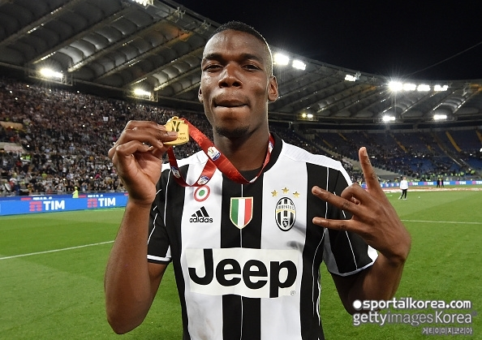

기사입력 2018.07.30 오후 01:28 최종수정 2018.07.30 오후 01:28

시작은 호날두였다. 유벤투스는 총액 1억 유로(약 1,299억 원) 이상을 들여 레알
마드리드의 상징을 데려왔다. 유럽축구연맹(UEFA) 챔피언스리그 2인자에 머물렀던
이들이 이를 독식한 호날두를 품어 또 다른 역사를 세우려 한다.
여기에 포그바가 유벤투스 이적을 희망한다는 보도도 나왔다. 현지에서는 이를 두고
'호날두 효과'란 표현을 썼다. 스페인 '마르카'는 "포그바가 맨체스터 유나이티드를
떠나길 원한다"라면서 "에이전트 미노 라이올라에게 다시 한 번 유벤투스에서 뛰고 싶다는
의사를 표했다. 이 의중은 맨유에도 전달됐다"라고 설명했다.
영국 '미러'는 유벤투스가 포그바 재영입을 위해 내보낼 선수 리스트를 나열했다.
매체는 "유벤투스가 포그바를 다시 제 선수로 만들고자 2억 파운드(약 2,922억 원)까지
쓸 의지가 있다. 미랼렘 피야니치, 곤살로 이과인, 다니엘레 루가니 등을 처분하면서
현금을 확보하려 한다"고 설명했다.
포그바는 맨유에서 자랐다. 하지만 만개하지는 못했다. 지난 2012년 유벤투스행을 통해
돌파구를 모색했다. 포그바는 4년 뒤 금의환향했다. 2016년 여름 세계 최고 이적료를
경신하며 맨유로 복귀한 바 있다.